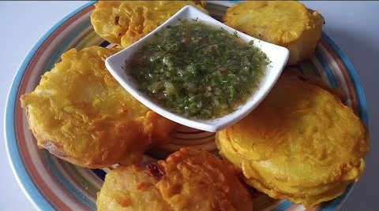

Seviche

Papa aborrajada with aji valluna
Ingredients
- 3 Pounds of small potatoes (about 18).
- 1 ½ tablespoon of salt.
- 1 cube chicken broth.
BREADED:
- 1 ½ cups flour.
- ½ teaspoon of salt.
- ¼ teaspoon ground cumin.
- 1 egg.
- 1 cup of water.
- 3 cups of oil for frying.
Steps
- Wash the potato with plenty of water. Do not peel them and cut them in half lengthwise.
- Place the potatoes in a pot with 8 cups of water, 1 ½ teaspoons of salt and the cube of substance. Cover and simmer 20 to 30 minutes or until potatoes are tender when a toothpick is inserted. Drain and dump the water. Let cool 10 minutes.
- In a bowl place the ingredients for the breading: Flour, salt, color, cumin, egg and salt. Mix with a whisk or fork until smooth.
- In a saucepan over medium high heat bring the oil to 350 ° f.
- Dip each potato into the batter and carefully pour into the deep oil for 3 to 4 minutes until lightly browned. Drain on paper towels
- Serve with hogao del pacifico or ají valluno